is syntactically correct at point
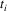
in this continuation, if the string
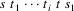
is a string of the language defined by the grammar for some
string
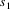
and i >= 0.
is syntactically correct at point
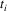
in this continuation, if the string
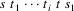
is a string of the language defined by the grammar for some
string
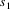
and i >= 0.Ceriel J. H. Jacobs
Dept. of Mathematics and Computer Science
Vrije Universiteit
Amsterdam, The Netherlands
ABSTRACT
LLgen provides a tool for generating an efficient recursive descent parser with no backtrack from an Extended Context Free syntax. The LLgen user specifies the syntax, together with code describing actions associated with the parsing process. LLgen turns this specification into a number of subroutines that handle the parsing process.
The grammar may be ambiguous. LLgen contains both static and dynamic facilities to resolve these ambiguities.
The specification can be split into several files, for each of which LLgen generates an output file containing the corresponding part of the parser. Furthermore, only output files that differ from their previous version are updated. Other output files are not affected in any way. This allows the user to recompile only those output files that have changed.
The subroutine produced by LLgen calls a user supplied routine that must return the next token. This way, the input to the parser can be split into single characters or higher level tokens.
An error recovery mechanism is generated almost completely automatically. It is based on so called default choices, which are implicitly or explicitly specified by the user.
LLgen has succesfully been used to create recognizers for Pascal, C, and Modula-2.
LLgen provides a tool for generating an efficient recursive descent parser with no backtrack from an Extended Context Free syntax. A parser generated by LLgen will be called LLparse for the rest of this document. It is assumed that the reader has some knowledge of LL(1) grammars and recursive descent parsers. For a survey on the subject, see reference (1).
Extended LL(1) parsers are an extension of LL(1) parsers. They are derived from an Extended Context-Free (ECF) syntax instead of a Context-Free (CF) syntax. ECF syntax is described in section 2. Section 3 provides an outline of a specification as accepted by LLgen and also discusses the lexical conventions of grammar specification files. Section 4 provides a description of the way the LLgen user can associate actions with the syntax. These actions must be written in the programming language C, 2 which also is the target language of LLgen. The error recovery technique is discussed in section 5. This section also discusses what the user can do about it. Section 6 discusses the facilities LLgen offers to resolve ambiguities and conflicts. LLgen offers facilities to resolve them both at parser generation time and during the execution of LLparse. Section 7 discusses the LLgen working environment. It also discusses the lexical analyzer that must be supplied by the user. This lexical analyzer must read the input stream and break it up into basic input items, called tokens for the rest of this document. Appendix A gives a summary of the LLgen input syntax. Appendix B gives an example. It is very instructive to compare this example with the one given in reference (3). It demonstrates the struggle LLparse and other LL(1) parsers have with expressions. Appendix C gives an example of the LLgen features allowing the user to recompile only those output files that have changed, using the make program. 4
The extensions of an ECF syntax with respect to an ordinary CF syntax are:
|
1. |
An ECF syntax contains the repetition operator: "N" (N represents a positive integer). | |
|
2. |
An ECF syntax contains the closure set operator without and with upperbound: "*" and "*N". | |
|
3. |
An ECF syntax contains the positive closure set operator without and with upperbound: "+" and "+N". | |
|
4. |
An ECF syntax contains the optional operator: "?", which is a shorthand for "*1". | |
|
5. |
An ECF syntax contains parentheses "[" and "]" which can be used for grouping. |
We can describe the syntax of an ECF syntax with an ECF syntax :
grammar : rule
+
;
This grammar rule states that a grammar consists of one or more rules.
rule :
nonterminal ’:’ productionrule ’;’
;
A rule consists of a left hand side, the nonterminal, followed by ":", the produce symbol, followed by a production rule, followed by a ";", indicating the end of the rule.
productionrule
: production [ ’|’ production ]*
;
A production rule consists of one or more alternative productions separated by "|". This symbol is called the alternation symbol.
production :
term *
;
A production consists of a possibly empty list of terms. So, empty productions are allowed.
term : element
repeats
;
A term is an element, possibly with a repeat specification.
element :
LITERAL
| IDENTIFIER
| ’[’ productionrule ’]’
;
An element can be a LITERAL, which basically is a single character between apostrophes, it can be an IDENTIFIER, which is either a nonterminal or a token, and it can be a production rule between square parentheses.
repeats :
’?’
| [ ’*’ | ’+’ ] NUMBER ?
| NUMBER ?
;
These are the repeat specifications discussed above. Notice that this specification may be empty.
The class of ECF languages is identical with the class of CF languages. However, in many cases recursive definitions of language features can now be replaced by iterative ones. This tends to reduce the number of nonterminals and gives rise to very efficient recursive descent parsers.
The major part of a LLgen grammar specification consists of an ECF syntax specification. Names in this syntax specification refer to either tokens or nonterminal symbols. LLgen requires token names to be declared as such. This way it can be avoided that a typing error in a nonterminal name causes it to be accepted as a token name. The token declarations will be discussed later. A name will be regarded as a nonterminal symbol, unless it is declared as a token name. If there is no production rule for a nonterminal symbol, LLgen will complain.
A grammar specification may also include some C routines, for instance the lexical analyzer and an error reporting routine. Thus, a grammar specification file can contain declarations, grammar rules and C-code.
Blanks, tabs and newlines are ignored, but may not appear in names or keywords. Comments may appear wherever a name is legal (which is almost everywhere). They are enclosed in /* ... */, as in C. Comments do not nest.
Names may be of arbitrary length, and can be made up of letters, underscore "_" and non-initial digits. Upper and lower case letters are distinct. Only the first 50 characters are significant. Notice however, that the names for the tokens will be used by the C-preprocessor. The number of significant characters therefore depends on the underlying C-implementation. A safe rule is to make the identifiers distinct in the first six characters, case ignored.
There are two kinds of tokens: those that are declared and are denoted by a name, and literals.
A literal consists of a character enclosed in apostrophes "’". The "\" is an escape character within literals. The following escapes are recognized :
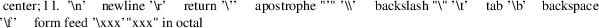
Names representing tokens must be declared before they are used. This can be done using the "%token" keyword, by writing
%token name1, name2, . . . ;
LLparse is designed to recognize special nonterminal symbols called start symbols. LLgen allows for more than one start symbol. Thus, grammars with more than one entry point are accepted. The start symbols must be declared explicitly using the "%start" keyword. It can be used whenever a declaration is legal, f.i.:
%start LLparse, specification ;
declares "specification" as a start symbol and associates the identifier "LLparse" with it. "LLparse" will now be the name of the C-function that must be called to recognize "specification".
LLgen allows arbitrary insertions of actions within the right hand side of a production rule in the ECF syntax. An action consists of a number of C statements, enclosed in the brackets "{" and "}".
LLgen generates a parsing routine for each rule in the grammar. The actions supplied by the user are just inserted in the proper place. There may also be declarations before the statements in the action, as the "{" and "}" are copied into the target code along with the action. The scope of these declarations terminates with the closing bracket "}" of the action.
In addition to actions, it is also possible to declare local variables in the parsing routine, which can then be used in the actions. Such a declaration consists of a number of C variable declarations, enclosed in the brackets "{" and "}". It must be placed right in front of the ":" in the grammar rule. The scope of these local variables consists of the complete grammar rule.
In order to facilitate communication between the actions and LLparse, the parsing routines can be given C-like parameters. Each parameter must be declared separately, and each of these declarations must end with a semicolon. For the last parameter, the semicolon is optional.
So, for example
expr(int *pval;) { int fact; } :
/*
* Rule with one parameter, a pointer to an int.
* Parameter specifications are ordinary C declarations.
* One local variable, of type int.
*/
factor (&fact) { *pval = fact; }
/*
* factor is another nonterminal symbol.
* One actual parameter is supplied.
* Notice that the parameter passing mechanism is that
* of C.
*/
[ ’+’ factor (&fact) { *pval += fact; } ]*
/*
* remember the ’*’ means zero or more times
*/
;
is a rule to recognize a number of factors, separated by "+", and to compute their sum.
LLgen generates C code, so the parameter passing mechanism is that of C, as is shown in the example above.
Actions often manipulate attributes of the token just read. For instance, when an identifier is read, its name must be looked up in a symbol table. Therefore, LLgen generates code such that at a number of places in the grammar rule it is defined which token has last been read. After a token, the last token read is this token. After a "[" or a "|", the last token read is the next token to be accepted by LLparse. At all other places, it is undefined which token has last been read. The last token read is available in the global integer variable LLsymb.
The user may also specify C-code wherever a LLgen-declaration is legal. Again, this code must be enclosed in the brackets "{" and "}". This way, the user can define global declarations and C-functions. To avoid name-conflicts with identifiers generated by LLgen, LLparse only uses names beginning with "LL"; the user should avoid such names.
The error recovery technique used by LLgen is a modification of the one presented in reference (5). It is based on default choices, which just are what the word says, default choices at every point in the grammar where there is a choice. Thus, in an alternation, one of the productions is marked as a default choice, and in a term with a non-fixed repetition specification there will also be a default choice (between doing the term (once more) and continuing with the rest of the production in which the term appears).
When LLparse detects an error after having parsed the string , the default choices enable it to compute one syntactically correct continuation, consisting of the tokens 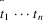 , such that 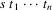 is a string of tokens that is a member of the language defined by the grammar. Notice, that the computation of this continuation must terminate, which implies that the default choices may not invoke recursive rules.
At each point in this
continuation, a certain number of other tokens could also be
syntactically correct, f.i. the token
is syntactically correct at point
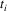
in this continuation, if the string
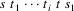
is a string of the language defined by the grammar for some
string
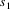
and i >= 0.
The set
 containing all these tokens (including
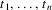
) is computed. Next, LLparse discards zero or more
tokens from its input, until a token
containing all these tokens (including
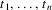
) is computed. Next, LLparse discards zero or more
tokens from its input, until a token
 ∈
∈
 is found. The error is then corrected by inserting i (i
>= 0) tokens
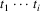
, such that the string
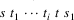
is a string of the language defined by the grammar, for some
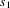
. Then, normal parsing is resumed.
is found. The error is then corrected by inserting i (i
>= 0) tokens
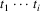
, such that the string
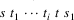
is a string of the language defined by the grammar, for some
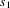
. Then, normal parsing is resumed.
The above is difficult to
implement in a recursive decent parser, and is not the way
LLparse does it, but the effect is the same. In fact,
LLparse maintains a list of tokens that may not be
discarded, which is adjusted as LLparse proceeds.
This list is just a representation of the set
 mentioned above. When an error occurs, LLparse
discards tokens until a token
that is a member of this list is found. Then, it continues
parsing, following the default choices, inserting tokens
along the way, until this token
mentioned above. When an error occurs, LLparse
discards tokens until a token
that is a member of this list is found. Then, it continues
parsing, following the default choices, inserting tokens
along the way, until this token
 is legal. The selection of the default choices must
guarantee that this will always happen.
is legal. The selection of the default choices must
guarantee that this will always happen.
The default choices are explicitly or implicitly specified by the user. By default, the default choice in an alternation is the alternative with the shortest possible terminal production. The user can select one of the other productions in the alternation as the default choice by putting the keyword "%default" in front of it.
By default, for terms with a repetition count containing "*" or "?" the default choice is to continue with the rest of the rule in which the term appears, and
term+
is treated as
term term* .
It is also clear, that it can never be the default choice to do the term (once more), because this could cause the parser to loop, inserting tokens forever. However, when the user does not want the parser to skip tokens that would not have been skipped if the term would have been the default choice, the skipping of such a term can be prevented by using the keyword "%persistent". For instance, the rule
commandlist : command* ;
could be changed to
commandlist : [ %persistent command ]* ;
The effects of this in case of a
syntax error are twofold: The set
 mentioned above will be extended as if "command"
were in the default production, so that fewer tokens will be
skipped. Also, if the first token that is not skipped is a
member of the subset of
arising from the grammar rule for "command",
LLparse will enter that rule. So, in fact the default
choice is determined dynamically (by LLparse). Again,
LLgen checks (statically) that LLparse will
always terminate, and if not, LLgen will
complain.
mentioned above will be extended as if "command"
were in the default production, so that fewer tokens will be
skipped. Also, if the first token that is not skipped is a
member of the subset of
arising from the grammar rule for "command",
LLparse will enter that rule. So, in fact the default
choice is determined dynamically (by LLparse). Again,
LLgen checks (statically) that LLparse will
always terminate, and if not, LLgen will
complain.
An important property of this error recovery method is that, once a rule is started, it will be finished. This means that all actions in the rule will be executed normally, so that the user can be sure that there will be no inconsistencies in his data structures because of syntax errors. Also, as the method is in fact error correcting, the actions in a rule only have to deal with syntactically correct input.
As LLgen generates a recursive descent parser with no backtrack, it must at all times be able to determine what to do, based on the current input symbol. Unfortunately, this cannot be done for all grammars. Two kinds of conflicts can arise :
|
1) |
the grammar rule is of the form "production1 | production2", and LLparse cannot decide which production to chose. This we call an alternation conflict. | |
|
2) |
the grammar rule is of the form "[ productionrule ]...", where ... specifies a non-fixed repetition count, and LLparse cannot decide whether to choose "productionrule" once more, or to continue. This we call a repetition conflict. |
There can be several causes for conflicts: the grammar may be ambiguous, or the grammar may require a more complex parser than LLgen can construct. The conflicts can be examined by inspecting the verbose (-v) option output file. The conflicts can be resolved by rewriting the grammar or by using conflict resolvers. The mechanism described here is based on the attributed parsing of reference (6).
An alternation conflict can be resolved by putting an if condition in front of the first conflicting production. It consists of a "%if" followed by a C-expression between parentheses. LLparse will then evaluate this expression whenever a token is met at this point on which there is a conflict, so the conflict will be resolved dynamically. If the expression evaluates to non-zero, the first conflicting production is chosen, otherwise one of the remaining ones is chosen.
An alternation conflict can also be resolved using the keywords "%prefer" or "%avoid". "%prefer" is equivalent in behaviour to "%if (1)". "%avoid" is equivalent to "%if (0)". In these cases however, "%prefer" and "%avoid" should be used, as they resolve the conflict statically and thus give rise to better C-code.
A repetition conflict can be resolved by putting a while condition right after the opening parentheses. This while condition consists of a "%while" followed by a C-expression between parentheses. Again, LLparse will then evaluate this expression whenever a token is met at this point on which there is a conflict. If the expression evaluates to non-zero, the repeating part is chosen, otherwise the parser continues with the rest of the rule. Appendix B will give an example of these features.
A useful aid in writing conflict resolvers is the "%first" keyword. It is used to declare a C-macro that forms an expression returning 1 if the parameter supplied can start a specified nonterminal, f.i.:
%first fmac, nonterm ;
declares "fmac" as a macro with one parameter, whose value is a token number. If the parameter X can start the nonterminal "nonterm", "fmac(X)" is true, otherwise it is false.
LLgen generates a number of files: one for each input file, and two other files: Lpars.c and Lpars.h. Lpars.h contains "#-define"s for the tokennames. Lpars.c contains the error recovery routines and tables. Only those output files that differ from their previous version are updated. See appendix C for a possible application of this feature.
The names of the output files are constructed as follows: in the input file name, the suffix after the last point is replaced by a "c". If no point is present in the input file name, ".c" is appended to it. LLgen checks that the filename constructed this way in fact represents a previous version, or does not exist already.
The user must provide some environment to obtain a complete program. Routines called main and LLmessage must be defined. Also, a lexical analyzer must be provided.
The routine main must be defined, as it must be in every C-program. It should eventually call one of the startsymbol routines.
The routine LLmessage
must accept one parameter, whose value is a token number,
zero or -1.
A zero parameter indicates that the current token (the one
in the external variable LLsymb) is deleted.
A -1 parameter indicates that the parser expected end of
file, but didn’t get it. The parser will then skip
tokens until end of file is detected.
A parameter that is a token number (a positive parameter)
indicates that this token is to be inserted in front of the
token currently in LLsymb. The user can give the
token the proper attributes. Also, the user must take care,
that the token currently in LLsymb is again returned
by the next call to the lexical analyzer, with the
proper attributes. So, the lexical analyzer must have a
facility to push back one token.
The user may also supply his own error recovery routines, or handle errors differently. For this purpose, the name of a routine to be called when an error occurs may be declared using the keyword %onerror. This routine takes two parameters. The first one is either the token number of the token expected, or 0. In the last case, the error occurred at a choice. In both cases, the routine must ensure that the next call to the lexical analyser returns the token that replaces the current one. Of course, that could well be the current one, in which case LLparse recovers from the error. The second parameter contains a list of tokens that are not skipped at the error point. The list is in the form of a null-terminated array of integers, whose address is passed.
The user must supply a lexical analyzer to read the input stream and break it up into tokens, which are passed to LLparse. It should be an integer valued function, returning the token number. The name of this function can be declared using the "%lexical" keyword. This keyword can be used wherever a declaration is legal and may appear only once in the grammar specification, f.i.:
%lexical scanner ;
declares "scanner" as the name of the lexical analyzer. The default name for the lexical analyzer is "yylex". The reason for this funny name is that a useful tool for constructing lexical analyzers is the Lex program, 7 which generates a routine of that name.
The token numbers are chosen by LLgen. The token number for a literal is the numerical value of the character in the local character set. If the tokens have a name, the "# define" mechanism of C is used to give them a value and to allow the lexical analyzer to return their token numbers symbolically. These "# define"s are collected in the file Lpars.h which can be "# include"d in any file that needs the token-names. The maximum token number chosen is defined in the macro LL_MAXTOKNO.
The lexical analyzer must signal the end of input to LLparse by returning a number less than or equal to zero.
LLgen offers a simple facility for having more than one parser in a program: in this case, the user can change the names of global procedures, variables, etc, by giving a different prefix, like this:
%prefix XX ;
The effect of this is that all global names start with XX instead of LL, for the parser that has this prefix. This holds for the variables LLsymb, which now is called XXsymb, for the routine LLmessage, which must now be called XXmessage, and for the macro LL_MAXTOKNO, which is now called XX_MAXTOKNO. LL.output is now XX.output, and Lpars.c and Lpars.h are now called XXpars.c and XXpars.h.
|
1. |
M. Griffiths, “LL(1) Grammars and Analysers” in Compiler Construction, An Advanced Course, ed. F. L. Bauer and J. Eickel, Springer-Verlag, New York, N.Y. (1974). | |
|
2. |
B. W. Kernighan and D. M. Ritchie, The C Programming Language, Prentice-Hall, Inc., Englewood Cliffs, New Jersey (1978). | |
|
3. |
S. C. Johnson, “Yacc: Yet Another Compiler Compiler,” Comp. Sci. Tech. Rep. No. 32, Bell Laboratories, Murray Hill, New Jersey (1975). | |
|
4. |
S. I. Feldman, “Make - A Program for Maintaining Computer Programs,” Software - Practice and Experience 10(8), pp. 255-265 (August 1979). | |
|
5. |
J. Rohrich, “Methods for the Automatic Construction of Error Correcting Parsers,” Acta Informatica 13, pp. 115-139 (1980). | |
|
6. |
D. R. Milton, L. W. Kirchhoff, and B. R. Rowland, “An ALL(1) Compiler Generator,” SIGPLAN Notices 14(8), pp. 152-157 (August 1979). | |
|
7. |
M. E. Lesk, “Lex - A Lexical Analyser Generator,” Comp. Sci. Tech. Rep. No. 39, Bell Laboratories, Murray Hill, New Jersey (October 1975). |
This appendix has a description of the LLgen input syntax, as a LLgen specification. As a matter of fact, the current version of LLgen is written with LLgen.
/*
* First the declarations of the terminals
* The order is not important
*/
%token IDENTIFIER; /* terminal
or nonterminal name */
%token NUMBER;
%token LITERAL;
/*
* Reserved words
*/
%token TOKEN; /* %token */
%token START; /* %start */
%token PERSISTENT; /* %persistent */
%token IF; /* %if */
%token WHILE; /* %while */
%token AVOID; /* %avoid */
%token PREFER; /* %prefer */
%token DEFAULT; /* %default */
%token LEXICAL; /* %lexical */
%token PREFIX; /* %prefix */
%token ONERROR; /* %onerror */
%token FIRST; /* %first */
/*
* Declare LLparse to be a C-routine that recognizes
"specification"
*/
%start LLparse, specification;
specification
: declaration*
;
declaration
: START
IDENTIFIER ’,’ IDENTIFIER
’;’
| ’{’
/* Read C-declaration here */
’}’
| TOKEN
IDENTIFIER
[ ’,’ IDENTIFIER ]*
’;’
| FIRST
IDENTIFIER ’,’ IDENTIFIER
’;’
| LEXICAL
IDENTIFIER
’;’
| PREFIX
IDENTIFIER
’;’
| ONERROR
IDENTIFIER
|
’;’ |
| rule
;
rule : IDENTIFIER parameters?
ldecl?
’:’ productions
’;’
;
ldecl : ’{’
/* Read C-declaration here */
’}’
;
productions
: simpleproduction
[ ’|’ simpleproduction ]*
;
simpleproduction
: DEFAULT?
|
[ IF ’(’ /* Read C-expression here */ ’)’ |
| PREFER
| AVOID
]?
[ element repeats ]*
;
element : ’{’
/* Read action here */
’}’
| ’[’ [ WHILE ’(’ /* Read
C-expression here */ ’)’ ]?
PERSISTENT?
productions
’]’
| LITERAL
| IDENTIFIER parameters?
;
parameters
: ’(’ /* Read C-parameters here */
’)’
;
repeats : /* empty */
| [ ’*’ | ’+’ ] NUMBER?
| NUMBER
| ’?’
;
This example gives the complete LLgen specification of a simple desk calculator. It has 26 registers, labeled "a" through "z", and accepts arithmetic expressions made up of the C operators +, -, *, /, %, &, and |, with their usual priorities. The value of the expression is printed. As in C, an integer that begins with 0 is assumed to be octal; otherwise it is assumed to be decimal.
Although the example is short and not very complicated, it demonstrates the use of if and while conditions. In the example they are in fact used to reduce the number of nonterminals, and to reduce the overhead due to the recursion that would be involved in parsing an expression with an ordinary recursive descent parser. In an ordinary LL(1) grammar there would be one nonterminal for each operator priority. The example shows how we can do it all with one nonterminal, no matter how many priority levels there are.
{
#include <stdio.h>
#include <ctype.h>
#define MAXPRIO 5
#define prio(op) (ptab[op])
struct token {
int t_tokno; /* token number */
int t_tval; /* Its attribute */
} stok = { 0,0 }, tok;
int nerrors = 0;
int regs[26]; /* Space for the registers */
int ptab[128]; /* Attribute table */
struct token
nexttok() { /* Read next token and return it */
register c;
struct token new;
while ((c = getchar()) ==
’ ’ || c == ’\t’) { /* nothing */ }
if (isdigit(c)) new.t_tokno = DIGIT;
else if (islower(c)) new.t_tokno = IDENT;
else new.t_tokno = c;
if (c >= 0) new.t_tval = ptab[c];
return new;
} }
%token DIGIT, IDENT;
%start parse, list;
list : stat* ;
stat { int ident, val; } :
%if (stok = nexttok(),
stok.t_tokno == ’=’)
/* The conflict is resolved by looking one further
* token ahead. The grammar is LL(2)
*/
IDENT
{ ident = tok.t_tval; }
’=’ expr(1,&val) ’\n’
{ if (!nerrors) regs[ident] = val; }
| expr(1,&val) ’\n’
{ if (!nerrors) printf("%d\n",val); }
| ’\n’
;
expr(int level; int *val;) { int
expr; } :
factor(val)
[ %while (prio(tok.t_tokno) >= level)
/* Swallow operators as long as their priority is
* larger than or equal to the level of this invocation
*/
’+’ expr(prio(’+’)+1,&expr)
{ *val += expr; }
/* This states that ’+’ groups left to right. If
it
* should group right to left, the rule should read:
* ’+’ expr(prio(’+’),&expr)
*/
| ’-’ expr(prio(’-’)+1,&expr)
{ *val -= expr; }
| ’*’ expr(prio(’*’)+1,&expr)
{ *val *= expr; }
| ’/’ expr(prio(’/’)+1,&expr)
{ *val /= expr; }
| ’%’ expr(prio(’%’)+1,&expr)
{ *val %= expr; }
| ’&’
expr(prio(’&’)+1,&expr)
{ *val &= expr; }
| ’|’ expr(prio(’|’)+1,&expr)
{ *val |= expr; }
]*
/* Notice the "*" here. It is important.
*/
|
; |
factor(int *val;):
’(’ expr(1,val) ’)’
| ’-’ expr(MAXPRIO+1,val)
{ *val = -*val; }
| number(val)
| IDENT
{ *val = regs[tok.t_tval]; }
;
number(int *val;) { int base; }
: DIGIT
{ base = (*val=tok.t_tval)==0?8:10; }
[ DIGIT
{ *val = base * *val + tok.t_tval; }
]* ;
%lexical scanner ;
{
scanner() {
if (stok.t_tokno) { /* a token has been inserted or read
ahead */
tok = stok;
stok.t_tokno = 0;
return tok.t_tokno;
}
if (nerrors && tok.t_tokno == ’\n’) {
printf("ERROR\n");
nerrors = 0;
}
tok = nexttok();
return tok.t_tokno;
}
LLmessage(insertedtok) {
nerrors++;
if (insertedtok) { /* token inserted, save old token */
stok = tok;
tok.t_tval = 0;
if (insertedtok < 128) tok.t_tval = ptab[insertedtok];
}
}
main() {
register *p;
for (p = ptab; p <
&ptab[128]; p++) *p = 0;
/* for letters, their attribute is their index in the regs
array */
for (p = &ptab[’a’]; p <=
&ptab[’z’]; p++) *p = p -
&ptab[’a’];
/* for digits, their attribute is their value */
for (p = &ptab[’0’]; p <=
&ptab[’9’]; p++) *p = p -
&ptab[’0’];
/* for operators, their attribute is their priority */
ptab[’*’] = 4;
ptab[’/’] = 4;
ptab[’%’] = 4;
ptab[’+’] = 3;
ptab[’-’] = 3;
ptab[’&’] = 2;
ptab[’|’] = 1;
parse();
|
exit(nerrors); |
} }
This appendix demonstrates how LLgen can be used in combination with the make program, to make effective use of the LLgen-feature that it only changes output files when neccessary. Make uses a "makefile", which is a file containing dependencies and associated commands. A dependency usually indicates that some files depend on other files. When a file depends on another file and is older than that other file, the commands associated with the dependency are executed.
So, make seems just the program that we always wanted. However, it is not very good in handling programs that generate more than one file. As usual, there is a way around this problem. A sample makefile follows:
# The grammar exists of the
files decl.g, stat.g and expr.g.
# The ".o"-files are the result of a
C-compilation.
GFILES = decl.g stat.g expr.g
OFILES = decl.o stat.o expr.o Lpars.o
LLOPT =
# As make does’nt handle
programs that generate more than one
# file well, we just don’t tell make about it.
# We just create a dummy file, and touch it whenever LLgen
is
# executed. This way, the dummy in fact depends on the
grammar
# files.
# Then, we execute make again, to do the C-compilations and
# such.
|
all: |
|
dummy |
make parser
dummy: $(GFILES)
LLgen $(LLOPT) $(GFILES)
touch dummy
parser: $(OFILES)
$(CC) -o parser $(LDFLAGS) $(OFILES)
# Some dependencies without
actions :
# make already knows what to do about them
Lpars.o: Lpars.h
stat.o: Lpars.h
decl.o: Lpars.h
expr.o: Lpars.h